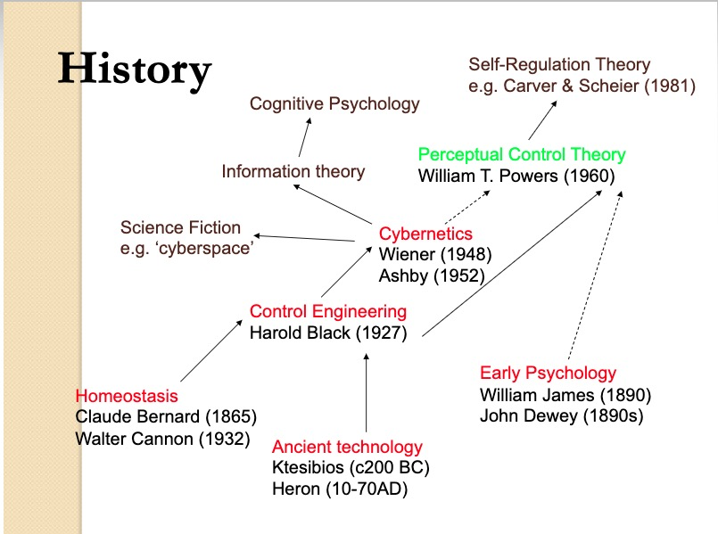

The whole elephant
Preliminaries
Support


Agenda
- \(\Psi >> \Phi\)
- 4 realms and their interactions
- Closing the loop
- In control
- Take homes
\(\Psi >> \Phi\)


But why?

What to do about it?
4 realms and their interactions

| Realm | Domain |
|---|---|
| \(W\) | The world |
| \(B\) | The body |
| \(N\) | The nervous system |
| \(M\) | The mind |
\(\dot{M} = f(M,N)\)
\(\dot{N} = f(N,B)\)
\(\dot{B} = f(B,N,W)\)
\(\dot{W} = f(W,B)\)
Nested causality
- Mind within nervous system
- Nervous system within body
- Body within world
Measure
- \(W\), \(B\), \(N\) directly
- At varied spatial & temporal scales

Measure
- \(M\) indirectly, only via \(N\), \(B\)

By Krauss - Own work, CC BY-SA 4.0, Link

“How should an experimenter proceed when faced with a black box?”
Ashby, 1956/2015, 6/2
“What properties of the Box’s contents are discoverable and what are fundamentally not discoverable?”
Ashby, 1956/2015, 6/2
“What methods should be used if the Box is to be investigated efficiently?”
Ashby, 1956/2015, 6/2
“The primary data of any investigation of a Black Box consists of a sequence of values of the vector with two components: (input state, output state).”
Ashby, 1956/2015, 6/5
“From this there follows the fundamental deduction that all fundamental knolwedge obtainable from a Black Box (of given input and output) is such as can be obtained by re-coding the protocol [sequence of input/output measurements].”
Ashby, 1956/2015, 6/5
“What is being suggested now is not that Black Box behavior is somewhat like real objects, but that the real objects are in fact all Black Boxes, and that we have in fact been operating with Black Boxes all our lives.”
Ashby, 1956/2015, 6/18
“The theory of the Black Box is simply the study of the relations between the experimenter and his environment, when special attention is given to the flow of information.”
Ashby, 1956/2015, 6/18
“‘The study of the real world thus becomes a study of transducers.’ (Goldman, Information Theory).”
Ashby, 1956/2015, 6/18
You say you want a revolution…

B.F. Skinner
\(S \rightarrow R\) psychology
- \(S\) (stimulus) -> \(R\) (response)
- \(S\) and \(R\) observable
- \(S\) is the effect of some \(W_i\) on \(B\)
- \(R\) is some change in \(B\) (\(\dot{B_i}\))

Noam Chomsky
\(S \rightarrow C \rightarrow R\)
- \(S\) (stimulus) -> \(C\) (cognition/computation) -> \(R\) (response)
- \(C\) inferred from structure in \(S\)->\(R\)
- \(C\) elaborate, probably innate
- \(S\) alone (from \(W\)) insufficient to explain \(C\), especially language, (Chomsky, 1959)
The cognitive ‘revolution’
- \(C\) (\(M\)) viewed in algorithmic terms
- Developed in parallel with computer science, AI
The cognitive (neuroscience) ‘revolution’
- Developed alongside cognitive science
- \(C (M) \leftrightarrow N\)
- What \(N_i\) compute functions of \(C (M)\)?
- Assume 1:1 relationship between \(N\) and \(C (M)\)
The problem with revolutions…

Linear/open-loop causality
- \(S \rightarrow R\)
- \(S \rightarrow C \rightarrow R\)
vs. Closed-loop causality

\(R\) (actions) create effects in the World (\(W\))
\(W\) states induce sensations (\(S\))
\(S\) affect \(C\) (computations/cognitions)
\(C\) affect \(A\)
…
Consequences of a \(S \rightarrow R\) and \(S \rightarrow C \rightarrow R\) focus
- Properties of \(W\) downplayed, ignored
- Why are \(S_i\) or \(C\) causal but not \(R_i\)?
- Variability in behavior \(R_i\) only noise
- Origins of \(R\), \(C\), \(A\)?
- \(W \leftrightarrow B \leftrightarrow N\) reflect ontogenetic and phylogenetic history

:format(webp)/cdn.vox-cdn.com/uploads/chorus_image/image/46249310/541530203.0.0.jpg)
“Reports that say that something hasn’t happened are always interesting to me, because as we know, there are known knowns; there are things we know we know.”
“We also know there are known unknowns; that is to say we know there are some things we do not know.”
“But there are also unknown unknowns—the ones we don’t know we don’t know. And if one looks throughout the history of our country and other free countries, it is the latter category that tend to be the difficult ones.”
The unknown-known of cybernetics
Alan Turing’s letter to Ross Ashby (~1946)

“In working on the ACE [Automatic Computing Engine] I am more interested in the possibility of producing models of the action of the brain than in the practical applications to computing.”
“The ACE will be used, as you suggest,…in an entirely undisciplined manner, similar to the action of the lower centres, although the reflexes are extremely complicated.”
“The disciplined action carries with it the disagreeable feature, which you mentioned, that it will be entirely uncritical when anything goes wrong. It will also be necessarily be devoid of anything that could be called originality.”
“It would be quite possible for the machine to try out variations in behaviour and accept or reject them in the manner you describe, and I have been hoping to make the machine do this…”
Ashby’s homeostat
Other signs and symptoms…
In neuroscience


Algorithms vs. Dynamics (Van Gelder, 1995)
- How to regulate the speed of a steam engine?

By Nicolás Pérez, CC BY-SA 3.0, Link
1. Measure the speed of the flywheel.
2. Compare the actual speed against the desired speed.
3. If there is no discrepancy, return to step 1. Otherwise,
a. measure the current steam pressure;
b. calculate the desired alteration in steam pressure;
c. calculate the necessary throttle valve adjustment.
4. Make the throttle valve adjustment.
5. Return to step 1.

By R. Routledge - Image from “Discoveries & Inventions of the Nineteenth Century” by R. Routledge, 13th edition, published 1900., Public Domain, Link
What if Marr was wrong (or we interpreted him wrongly)?

Biological computing
- Constrained by space, time, energy

25 W vs. ?? MW
Biological computing
- Computes with chemistry (when possible), and ‘wires’ (when necessary)

Biological computing
- Engages in real-time behaviors with existential consequences (ingestion, defense, reproduction)
- Interacts with dynamic environments
Biological computing
- Separate ‘streams’ for \(S \leftrightarrow C \leftrightarrow A\)


Is connectomics the answer?
“What we know from C. elegans and the crustacean stomatogastric ganglion, with networks involving very few neurons, is that we haven’t a clue how they work even with the essential addition of electrophysiology.”
“So, while SS’s memorable (if pukeworthy) ‘I am more than my genome, I am my connectome’ may be true in a grossly superficial way, they are not going resolve connectional issues in any useful way using their current approaches.”
“So, while SS’s memorable (if pukeworthy) ‘I am more than my genome, I am my connectome’ may be true in a grossly superficial way, they are not going resolve connectional issues in any useful way using their current approaches.”
Closing the loop
Perceptual Control Theory (PCT)

Powers, 1973

Powers, 1973
Tenets of PCT
- Perception is the source of controlled variables
- Actions control perception with respect to some referent signal
- Nested hierarchies of perceptual control systems

Related approaches
- Dynamic Systems Theory (DST) (Van Gelder)
- Ecological Psychology (e.g., Gibson, Turvey)
- Forward models
- Cognitive control/Executive functions
- Reafference, Helmholtzian ‘unconscious inference’
What is being controlled?
- Perceptual states (PCT) vs. Actions (Ecological Psychologists, forward modelers)
- Control illustrates the purposive dimension of behavior (Tolman)
- Mappings from \(S\) to \(R\) and \(C\) -> \(C\) (cognitive control/executive functions)
What do animals control?
Internal states
- Hunger, thirst, activity/arousal level, temperature, …
- Mood
- Thoughts
- …
External states
- Direction/position/motion of sensory organs
- Body postures, movements in space
- Emissions (e.g., sound)
- Secretions
Locomotion
- Foundational example of “knowing” (\(A\)->\(W\)->\(P\)) (Turvey & Shaw)
- Change body configuration
- Produce forces that propel organism
- Control variable(s) are speed, heading direction, posture
Embedded within locomotion
- Perceiving a ‘locomotable’ trajectory
- Perceiving stable body posture
Perceiving a ‘locomotable’ trajectory
- From vision/audition -> surface layout
- From kinesthesia -> body orientation relative to contact surface
Constraints on ‘locomotable’ trajectory
- Wide enough to permit passage of body (geometric properties)
- In general direction of desired heading (geometric properties)
- Direction toward or away depending on valence of target(s)
Constraints on ‘locomotable’ trajectory
- With suitable supporting surface (friction, support rigidity, size)
- With sufficient ‘clearance’ to avoid injury
Controlling speed
- From proprioception -> energy expenditure, limb movement rate, respiration and heart rate
- From vision -> optical flow (as a function of distance)
- From audition ->
- From vestibular sense -> \(\int{\dot{x}dx}\)
Perceiving stable body posture
- From vestibular sense -> linear and angular accelerations of the head (e.g., gravity)
- From kinesthesia -> body configuration and Center of Mass (CoM)
- From kinesthesia -> base of support
Visual perception of surface layout
- Stabilize gaze direction (despite head/body movements)
- Regulate binocular fixation
- Sample visual field
- Regulate optical focus
- (Possibly) track moving target object
Postural control
- Righting reflex
- Myotatic (stretch) reflex
Visual object tracking

Image stabilization
- Vestibulo-ocular Response (VOR)
- Optokinetic Nystagmus
- Pursuit
- Saccades & microsaccades
Fruitful lines
- Properties of \(W\) and of \(A\)->\(W\)->\(P\)
- Events in \(W\) specified by multiple \(P_i\)
- Topographic maps
- ‘Fourier’-like mappings common
Fruitful lines
- Measuring ‘controlled variables’ in \(N\) and \(B\)
- Explains spontaneous (arising from \(M\)/\(N\)) behaviors
- Effects of responses to stimuli \(S\) (events in \(W\) or \(\dot{W}\)) are perturbations to existing set of controlled variables
Challenges
- Temporal delays
- Simultaneous events have different propagation speeds
- Vary over 2 orders of magnitude

Challenges
- Deep ‘theories of tasks’ amenable to control variable analyses

Powers, 1973
Challenges
- Handling mixtures of perceptual signals?
\(P(t)=\sum_{i=1}^n w_{i}(t)S_{i}(t)\)
\(\sum_{i=1}^n w_{i}(t) = 1\)
e.g., object distance from vision (multiple cues), audition, olfaction, proprioception, or
body posture from vision, vestibular proprioception, muscle/joint proprioception
Challenges
- What are the statistics of the perceptual environment…
- Across ontogenetic development?

Challenges
- Mixtures of control laws…
\(A(t)=\sum_{i=1}^n w_{i}(t)F_{i}\)
\(\sum_{i=1}^n w_{i}(t) = 1\)
Challenges
- Clear specification of controlled systems & control variables
- Widespread open sharing
- Imagine a ‘meta-analysis’ of control variables & dynamical relationships
Take homes
| Algorithms | Dynamics |
|---|---|
| for x in range(0, n): | \(\dot{x}=f(x,a)\) |
Different types of Black Boxes

Complicate before simplifying?

And yet…
- An organism in some state of relative constancy (\(\dot{B}<\epsilon\)) is under the influence of one or more control systems.
- \(\dot{B}=f(B,N,W)\)
- For every \(R_i\) (\(\dot{B_i}\)) there is some \(S_i\) (\(\dot{B_i}\) or \(\dot{W_i}\)) …
Our open science future
Is there a reproducibility crisis in science?
- Yes, a significant crisis
- Yes, a slight crisis
- No crisis
- Don’t know
 (
(Have you failed to reproduce an experiment from your lab or someone else’s?
 (
(Why this matters
“The advancement of detailed and diverse knowledge about the development of the world’s children is essential for improving the health and well-being of humanity…”
“We regard scientific integrity, transparency, and openness as essential for the conduct of research and its application to practice and policy…”
https://www.srcd.org/about-us/policy-scientific-integrity-transparency-and-openness
Open science will accelerate discovery
- Open sharing of materials, analysis code, & data
- Causal/dynamic models in discoverable formats
- Video + physio + other temporally dense time series?
- Databrary.org

rogilmore@psu.edu https://gilmore-lab.github.io https://gilmore-lab.github.io/2019-03-25-cne/
Materials
sessionInfo()## R version 3.5.2 (2018-12-20)
## Platform: x86_64-apple-darwin15.6.0 (64-bit)
## Running under: macOS Mojave 10.14.3
##
## Matrix products: default
## BLAS: /System/Library/Frameworks/Accelerate.framework/Versions/A/Frameworks/vecLib.framework/Versions/A/libBLAS.dylib
## LAPACK: /Library/Frameworks/R.framework/Versions/3.5/Resources/lib/libRlapack.dylib
##
## locale:
## [1] en_US.UTF-8/en_US.UTF-8/en_US.UTF-8/C/en_US.UTF-8/en_US.UTF-8
##
## attached base packages:
## [1] stats graphics grDevices utils datasets methods base
##
## other attached packages:
## [1] forcats_0.3.0 stringr_1.4.0 dplyr_0.8.0.1 purrr_0.3.0
## [5] readr_1.3.1 tidyr_0.8.2 tibble_2.0.1 tidyverse_1.2.1
## [9] ggplot2_3.1.0 igraph_1.2.2
##
## loaded via a namespace (and not attached):
## [1] revealjs_0.9 tidyselect_0.2.5 xfun_0.4 haven_2.0.0
## [5] lattice_0.20-38 colorspace_1.4-0 generics_0.0.2 htmltools_0.3.6
## [9] yaml_2.2.0 rlang_0.3.1 pillar_1.3.1 glue_1.3.0
## [13] withr_2.1.2 modelr_0.1.2 readxl_1.2.0 plyr_1.8.4
## [17] munsell_0.5.0 gtable_0.2.0 cellranger_1.1.0 rvest_0.3.2
## [21] evaluate_0.13 labeling_0.3 knitr_1.21 broom_0.5.1
## [25] Rcpp_1.0.0 scales_1.0.0 backports_1.1.3 jsonlite_1.6
## [29] hms_0.4.2 digest_0.6.18 stringi_1.3.1 grid_3.5.2
## [33] cli_1.0.1 tools_3.5.2 magrittr_1.5 lazyeval_0.2.1
## [37] crayon_1.3.4 pkgconfig_2.0.2 xml2_1.2.0 lubridate_1.7.4
## [41] assertthat_0.2.0 rmarkdown_1.11 httr_1.4.0 rstudioapi_0.9.0
## [45] R6_2.4.0 nlme_3.1-137 compiler_3.5.2